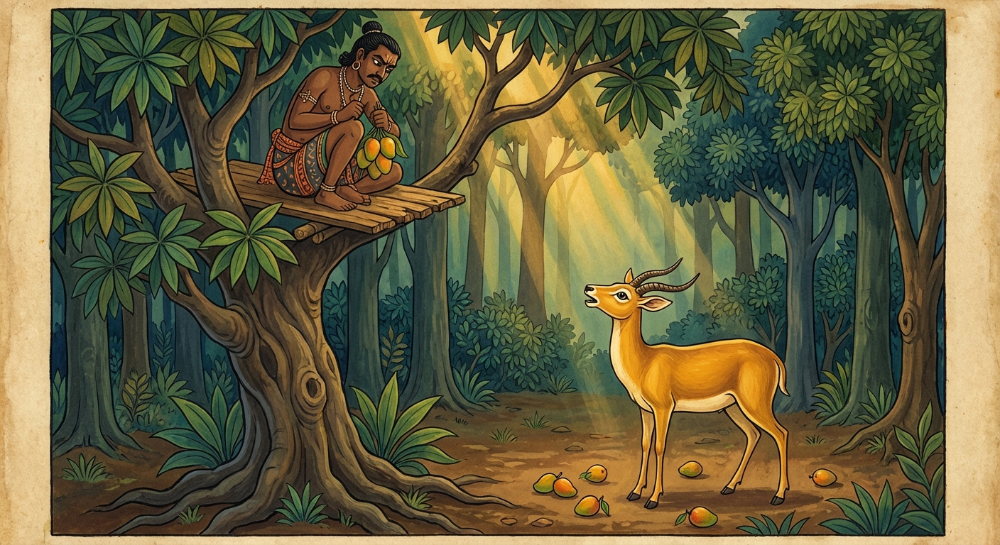

1. කුරුඞ්ගමිග ජාතකය (21)
“ඤාතමෙතං කුරුඞ්ගස්සා” යන මේ ධර්ම දේශනාව බුදුරජාණන් වහන්සේ වේළුවනයෙහි වැඩවසන සමයෙහි දේවදත්ත තෙරුන් අරබයා දේශනා කළ සේක. එක් දිනක් ධර්ම සභාවට රැස්වූ භික්ෂූන් වහන්සේලා, “ඇවැත්නි, දේවදත්ත තෙම තථාගතයන් වහන්සේව මැරීම පිණිස දුනුවායන් යෙදවීය, ගලක් පෙරළුවේය, ධනපාල නම් ඇතු මෙහෙයවීය. මේ ආදී වශයෙන් හැම අයුරින්ම දසබලයන් වහන්සේ නැසීමට උත්සාහ කරයි” යැයි දේවදත්තයන්ගේ අගුණ කියමින් සිටියහ. ශාස්තෘන් වහන්සේ එතැනට වැඩම කොට පනවන ලද ආසනයෙහි වැඩසිට, “මහණෙනි, මේ දැන් කවර කතාවකින් යුතුව හුන්නාහුද?” යි විමසූ සේක. “ස්වාමීනි, දේවදත්ත තෙම ඔබවහන්සේ නැසීමට උත්සාහ කරයි, අපි ඔහුගේ අගුණ කතා කරමින් සිටියෙමු” යි පැවසූහ. එවිට බුදුරජාණන් වහන්සේ, “මහණෙනි, දේවදත්ත තෙම මා නැසීමට උත්සාහ කරන්නේ දැන් පමණක් නොවේ, පෙරත් මා නැසීමට උත්සාහ කළේය. එහෙත් මා නසන්නට නොහැකි විය” යයි වදාරා අතීත කතාව ගෙනහැර දැක්වූ සේක.
අතීතයෙහි බරණැස් නුවර බ්රහ්මදත්ත රජු රාජ්ය කරන කල්හි බෝධිසත්ත්වයෝ කුරුඞ්ග මුවෙකුව ඉපිද එක් වනයක පලතුරු කමින් ජීවත් වූහ. එක් කාලෙක ඔහු පලින් බර වූ ඇත්දෙමට ගසක ගෙඩි කයි. එකල ගම්වැසි, අටලු බැඳ සතුන් මරන වැද්දෙක් පලතුරු ගස් මුල්වල මුවන්ගේ පිය සටහන් පරීක්ෂා කොට, ගස මත අටල්ලක් බැඳ එහි හිඳ, ගෙඩි කෑමට එන මුවන් අඩයටියෙන් විද මරා, ඔවුන්ගේ මස් විකුණමින් ජීවිකාව කළේය. දිනක් ඔහු ඒ ගස මුල බෝධිසත්වයන්ගේ පා සලකුණු දැක, ඒ ඇත්දෙමට ගසෙහි අටල්ලක් බැඳ, උදෙන්ම බත් කා අඩයටියද ගෙන වනයට පිවිස, ඒ ගසට නැඟී අටල්ලෙහි රැඳී සිටියේය. බෝධිසත්ත්වයෝ ද අලුයම වසන තැනින් නික්ම, “ඇත්දෙමට ගෙඩි කන්නෙමි” යි සිතා අවුත්, වහාම රුක් මුලට නොපිවිස, “සමහරවිට අටලු වැද්දෝ ගස්වල අටලු බඳිති. එවැනි අනතුරක් ඇත්දැ” යි විමසමින් පිටතම රැඳී සිටියේය.
වැද්දා ද බෝධිසත්වයන් ගස යටට නොඑන බව දැන, අටල්ලෙහි හිඳගෙනම ඇත්දෙමට ගෙඩි කඩා ඔහු ඉදිරියෙහි හෙළුවේය. එවිට බෝධිසත්ත්වයෝ, “මේ ගෙඩි අවුත් මා ඉදිරියෙහි වැටෙයි. ගස උඩ වැද්දකු සිටීදැ” යි නැවත නැවතත් උඩ බලන්නාහු, වැද්දා දැක ද ඔහු නොදුටුවාක් මෙන් සිට, “එම්බා වෘක්ෂය, මීට පෙර ඔබ ගෙඩි හෙළුවේ ලඹයක් පැද්දෙන්නාක් මෙන් (වක්රාකාරව) ය. එහෙත් දැන් එක එල්ලේම ගෙඩි හෙළන්නෙහිය. අද ඔබ රුක් දහම අත්හැරියෙහිය. මෙසේ ඔබ විසින් රුක් දහම අත්හළ කල්හි, මම අන් ගසක් මුලට ගොස් මගේ ආහාර සොයා ගන්නෙමි” යි පවසා මේ ගාථාව කීවේය.

“එම්බා ඇත්දෙමට ගස, ඔබ යම් හෙයකින් ඉදිරියට ගෙඩි විසුරුවන්නෙහි ද, ඒ කාරණය කුරුඞ්ග මුවාට පැහැදිලිය. මම වෙනත් ඇත්දෙමට ගසක් වෙත යමි. ඔබේ පලතුරු මට රුචි නොවේ.”
එහි ඤාතං යනු ප්රකට විය යන්නයි. එතං යනු මේ කාරණයයි. කුරුඞ්ගස්ස යනු කුරුඞ්ග මුවාටයි. යං ත්වං සෙපණ්ණි සෙය්යසි යනු එම්බා ඇත්දෙමට ගස, ඔබ මා ඉදිරියෙහි පලතුරු හෙළමින් යම් සෙයකින් ‘විසෙය්යසි’ හෙවත් විසිරුණු පලතුරු ඇත්තෙක් වෙහිද (වැඩි වැඩියෙන් ගෙඩි විසුරුවන්නෙහි ද), ඒ සියල්ල කුරුඞ්ග මුවාට ප්රකට විය යන්නයි. න මෙ තෙ රුච්චතෙ ඵලන්ති යනු මෙසේ කෘත්රිමව පලතුරු දෙන කල්හි, ඔබේ පලතුරු මට රුචි නොවේ; ඔබ මෙහිම සිටින්න, මම වෙනත් තැනකට යන්නෙමි යි කියා ඔහු පිටව ගියේය.
ඉක්බිති වැද්දා අටල්ලෙහි හිඳගෙනම අඩයටිය දමා ගසා, “පලයන්, දැන් මට වැරදුණේය” යි කීවේය. බෝධිසත්ත්වයෝ නැවතී සිට, “එම්බා පුරුෂය, දැන් ඔබට මා අහිමි වුවද (වැරදුණ ද), අටමහ නිරය, සොළොස් ඔසුපත් නිරය සහ පස් වැදෑරුම් බන්ධන ආදී කර්ම විපාකයන් නම් ඔබට නොවරදින්නේමය” යි කීහ. මෙසේ පවසා මුවා පලා ගොස් කැමති තැනක ගියේය. වැද්දා ද ගසින් බැස කැමති පරිදි ගියේය.
ශාස්තෘන් වහන්සේ, “මහණෙනි, දේවදත්ත තෙම මා නැසීමට උත්සාහ කරන්නේ දැන් පමණක් නොවේ, පෙර ද උත්සාහ කළේය. එහෙත් නැසීමට නොහැකි විය” යයි මෙම ධර්ම දේශනාව ගෙනහැර දක්වා, පූර්වාපර සන්ධි ගළපා ජාතක කතාව නිම කළ සේක. “එකල අටලු වැද්දා වූයේ දේවදත්තය. කුරුඞ්ග මුවා වූයේ මම ම වෙමි.”
පළමු වන කුරුඞ්ගමිග ජාතක වර්ණනාවයි.